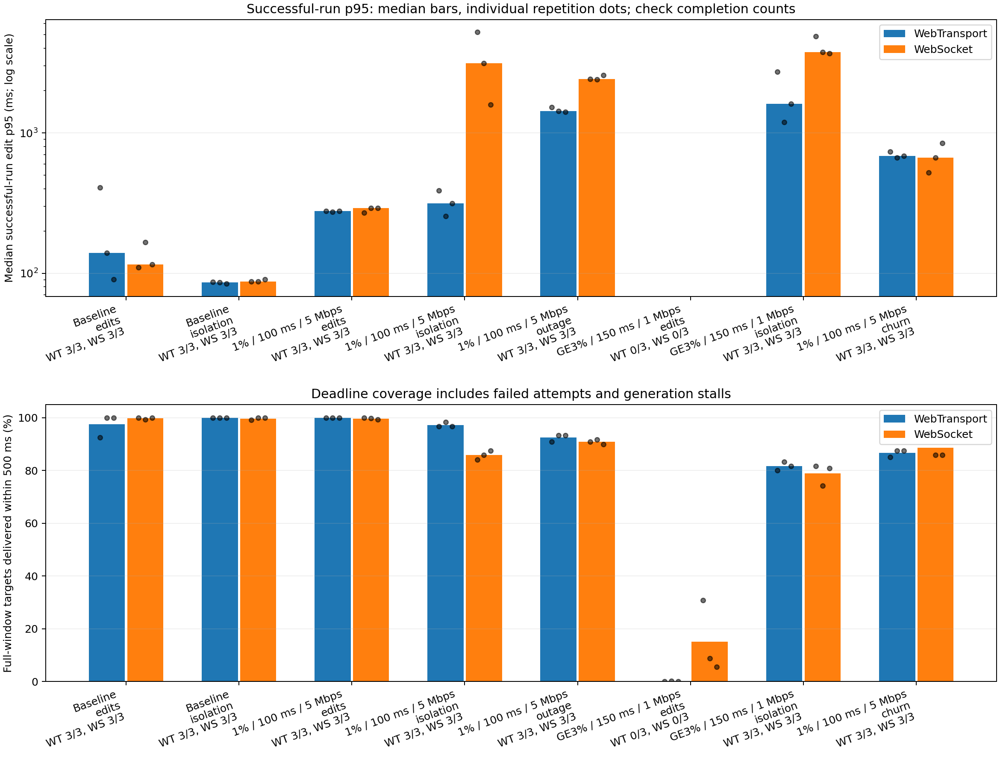

Edit propagation from one Chromium client to the other through the durable Automerge relay, measured on the same browser-host clock. Matched TCP/UDP impairment. This comparison covers random loss, burst loss, jitter, low bandwidth, control messages alongside bulk transfers, and a temporary packet blackout.
| Network | Workload | Transport | Converged | Successful p95 ms | ≤500 ms target coverage | During-bulk p95 ms | Bulk transfer s | Fresh recovery s | Completed reconnects |
|---|
Percentiles summarize successful attempts. Completion counts and deadline coverage include failures. Deadline coverage uses the full planned measurement window, so disconnected clients and stalled edit generation cannot improve the score. Bulk columns apply to the isolation workload; recovery applies to the outage workload.

WebTransport uses independent reliable streams per document; WebSocket multiplexes documents on one ordered connection. Both share the same application and network resource limits. These results do not test unreliable datagrams or IP migration. Raw outcomes, network events, counters and resource samples · Every attempt · Every edit observation